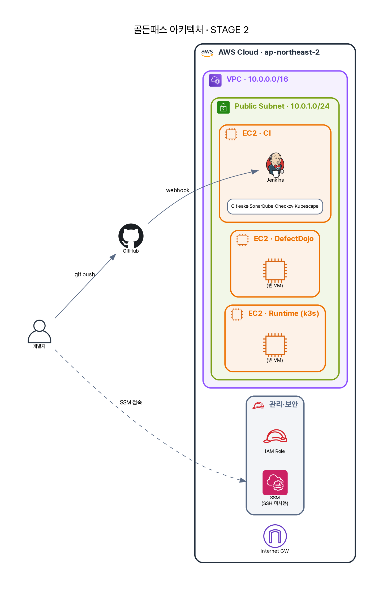

2화 · "근데 이걸 누가 다 돌려요?"¶
작업장이 섰고(1화), A는 의욕적으로 도구를 하나씩 깔아 손으로 돌려봤다. Gitleaks, SonarQube, Checkov, Trivy… 다 된다. 자랑하듯 시니어에게 보여주자, 돌아온 건 칭찬이 아니라 질문이었다.
"그래서, 개발자가 push할 때마다 그 일곱 개를 네가 손으로 돌릴 거야? 결과는 어디 모으고? 누가 '이건 막아야 한다'를 종합 판정하지?"
A는 또 막혔다. 그리고 이번 벽이 1화보다 본질적이라는 걸 깨달았다. 도구가 있는 것과 도구가 엮여 스스로 판단하는 것은 전혀 다른 일이다. 깔려만 있으면 그건 그냥 "딸깍"이다 — 사람이 매번 손으로 돌리고, 결과를 눈으로 줍고, 머리로 종합해야 한다. 사람이 빠지면 멈추는 보안은 보안이 아니다. 필요한 건 push 한 번에 일곱 검사가 순서대로 돌고, 결과가 한곳에 모이고, 기준에 따라 막거나 통과시키는 — 파이프라인이었다.

이 장은 그래서 도구 이야기가 아니다. 흩어진 도구들을 어떻게 잇는가에 대한 이야기다. 그리고 그 "잇는 법"이야말로, 도구 사용법보다 면접에서 훨씬 더 깊은 질문을 받는 지점이다.
코드를 안 고치고, 파라미터로 잇는다¶
A는 Jenkins에서 Pipeline Job을 하나 만들고 Jenkinsfile.aws-ci를 가리켰다. 여기서 첫 번째 설계 결정이 나온다 — 앱 코드도, 파이프라인 코드도 고치지 않고, 전부 파라미터로 연결한다. 이 파라미터 목록이 곧 "무엇과 무엇을 어떻게 잇는가"의 답이다.
parameters {
string(name: 'APP_SOURCE_REPO_URL', defaultValue: '…/app-source-repo.git') // 검사할 앱 소스
string(name: 'GITOPS_REPO_URL', defaultValue: '…/gitops-manifest-repo.git') // 배포 매니페스트
string(name: 'SERVICES', defaultValue: 'user-service,transaction-service,…') // 빌드·스캔 대상
string(name: 'REGISTRY_URL', defaultValue: '10.0.1.169:8082') // Harbor 연결
string(name: 'SONAR_HOST_URL', defaultValue: 'http://localhost:9000') // SonarQube 연결
password(name: 'SONAR_TOKEN') // (Jenkins credential)
booleanParam(name: 'ENFORCE_GATE', defaultValue: false) // 막을까, 기록만 할까
}
파라미터 하나하나가 연결의 양 끝이다. APP_SOURCE_REPO_URL은 "무엇을 검사할지", REGISTRY_URL은 "어디에 결과물을 보낼지", SONAR_HOST_URL은 "SonarQube 서버가 어디 있는지"를 가리킨다. 그리고 ENFORCE_GATE 하나가 "막을까, 기록만 할까"라는 정책 스위치다. 같은 파이프라인이, 파라미터만 바꾸면 다른 레포·다른 환경에 그대로 선다. 손으로 고칠 게 없다는 것 — 그게 자동화의 첫 조건이다.
이제 이 파이프라인이 도구를 세 단계로 엮는다. 끌어오고(checkout), 같은 칸에 모으고(REPORT_DIR), 종합 판정한다(gate).
연결 ① — 세 레포를 끌어온다¶
CI 레포는 앱 소스도 매니페스트도 중복으로 들고 있지 않는다. 필요한 순간에 각자의 출처에서 끌어온다.
dir('app-source-repo') { checkout([..., userRemoteConfigs: [[url: "${APP_SOURCE_REPO_URL}"]]]) }
dir('gitops-manifest-repo') { checkout([..., userRemoteConfigs: [[url: "${GITOPS_REPO_URL}"]]]) }
사소해 보이지만 중요한 설계다. 검사 대상(app-source-repo)과 배포 선언(gitops-manifest-repo)을 분리해 두면, 코드를 고치는 사람과 배포를 바꾸는 사람이 서로를 밟지 않는다. 파이프라인은 매 빌드마다 둘의 그 순간 상태를 가져와 검사한다 — "내 노트북의 옛날 사본"이 아니라.
연결 ② — 모든 도구가 같은 칸에 쓴다¶
A가 진짜 "아하" 했던 지점이 여기다. 빌드마다 결과를 모을 약속된 폴더 구조를 먼저 판다.
REPORT_DIR="reports/dev/${BUILD_NUMBER}"
mkdir -p "${REPORT_DIR}"/{gate,registry,checkov,gitleaks,sonarqube,kubescape,sbom,trivy}
이 한 줄이 파이프라인 전체의 계약이다. 규약은 단순하다 — Gitleaks는 …/gitleaks/에, Trivy는 …/trivy/에, 각자 자기 칸에 JSON을 쓴다. 도구끼리 직접 대화하지 않는다. 서로의 존재조차 모른다. 오직 파일 시스템의 약속으로 느슨하게 연결될 뿐이다.
이 "느슨한 결합"이 왜 중요한가. 새 도구를 끼우고 싶으면 자기 칸에 결과만 쓰면 된다 — 다른 도구도, 게이트도 고칠 필요가 없다. 도구 하나가 죽어도 나머지는 자기 칸에 계속 쓴다. 7종 도구를 한 덩어리로 엮으면 하나가 무너질 때 전부 무너지지만, 칸으로 나누면 각자 독립한다. 좋은 파이프라인은 도구를 빽빽하게 묶는 게 아니라, 느슨하게 세워두고 결과만 모으는 것이다.
연결 ③ — 게이트가 칸들을 읽어 판단을 코드화한다¶
마지막 한 스테이지가 모든 칸을 읽어 종합한다.
files = glob.glob(os.path.join(gitleaks_dir, "*.json")) # …/gitleaks/*.json 전부
# 임계값과 비교 — 시크릿 0개, CRITICAL 0개, HIGH 3개 초과면 BLOCK
print(f"GITLEAKS_GATE_RESULT={'BLOCK' if blocked else 'PASS'}")
여기서 판단이 코드가 된다. 게이트는 각 칸의 JSON을 glob으로 쓸어 담아 임계값과 비교한다 — GATE_MAX_CRITICAL=0, GATE_MAX_HIGH=3, GITLEAKS_MAX_FINDINGS=0. 시크릿이 하나라도 있으면, CRITICAL이 하나라도 있으면, HIGH가 셋을 넘으면 BLOCK. 결과는 …/gate/aggregated-summary.txt로 모이고, ENFORCE_GATE=true면 push 전에 빌드를 실패시킨다.
A가 push 한 번을 하자, 18개 스테이지가 순서대로 돌고, reports/dev/3/ 아래 도구별 칸에 증적이 쌓이고, 게이트가 종합 판정을 내렸다. 딸깍이 흐름이 됐다. 이제 A는 한 문장으로 설명할 수 있다 — "개발자 push → 다중 레포 체크아웃 → 7종 검사가 각자 REPORT_DIR에 기록 → 게이트가 임계값으로 종합 판정 → 통과분만 레지스트리로."
그 숫자는 누가 정하는가¶
그런데 A가 멈춰 생각한 게 있다. GATE_MAX_HIGH=3 — 왜 3인가? 2면 안 되나, 5면 너무 느슨한가? 이 숫자는 기술 설정처럼 생겼지만 기술이 아니다. "HIGH 취약점 3개까지는 안고 배포한다"는 건, 조직이 받아들이기로 한 위험의 크기다. 그리고 그 크기를 정하는 건 엔지니어가 아니다.
여기에 한계도 정직하게 적어둔다. 파라미터 기본값에 토큰을 박으면 안 된다 — SONAR_TOKEN·레지스트리 비밀번호는 Jenkins Credentials로 주입해야 한다. 이 파이프라인은 이미지 push까지이고, GitOps 태그 자동 갱신(CD)은 뒤 장에서 도입사가 붙인다. 그리고 도구가 죽어 빈 JSON을 남겼을 때, 게이트가 "결과 없음"을 통과로 오인하지 않도록 검증이 필요하다 — "검사를 안 한 것"과 "검사했는데 깨끗한 것"은 하늘과 땅 차이다.
A가 정리한 자리들¶
기술적으로 이 파이프라인의 핵심은 REPORT_DIR 규약이다 — 도구를 느슨하게 결합해 추가·교체를 파이프라인 수정 없이 가능하게 하고, 게이트가 흩어진 결과를 한 판정으로 모은다. 규제로 옮기면 이건 ISMS-P 2.8(개발 보안)·2.9(변경 관리)와 PCI-DSS Req 6.x의 "배포 전 검증 절차의 표준화·기록"을 이행한다 — 매 빌드의 증적이 REPORT_DIR에 남으니 감사 추적이 자동으로 생긴다. 정책의 영역에서, 게이트 임계값(CRITICAL 0·HIGH 3·시크릿 0)은 곧 조직의 위험 허용선을 코드로 박은 것이고 ENFORCE_GATE는 그 정책의 on/off 스위치다. 그리고 관리의 영역 — 그 임계값과 예외(ENFORCE_GATE=false)를 누가 정하느냐가 가장 중요하다. 그건 보안책임자의 리스크 수용 결정이지, 엔지니어가 빌드를 통과시키려고 임의로 끌 수 있는 게 아니다. 파이프라인은 정책을 집행할 뿐, 정책을 만들지 않는다.
A가 2화에서 얻은 문장. 파이프라인은 도구를 잇는 기계가 아니라, 정책을 집행하는 기계다.
뼈대가 섰다. 이제 그 첫 관문에 무엇이 걸리는지 보자 — push 한 번에, A의 코드에서 비밀번호가 튀어나온다.
다음 → 3화 · "API 키가 깃허브에 올라갔어요"